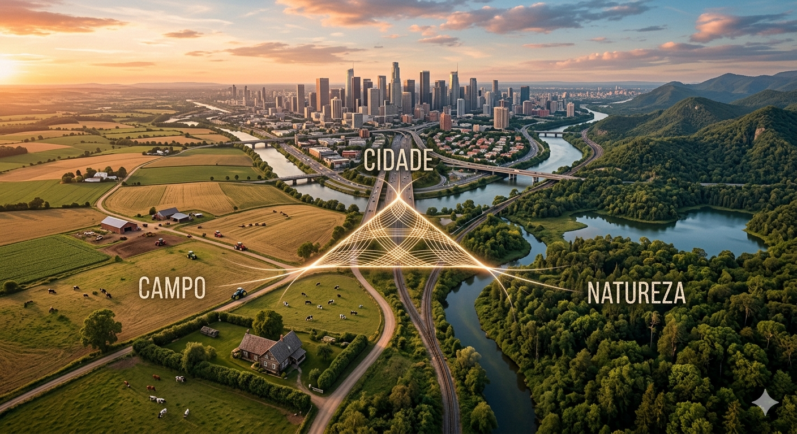
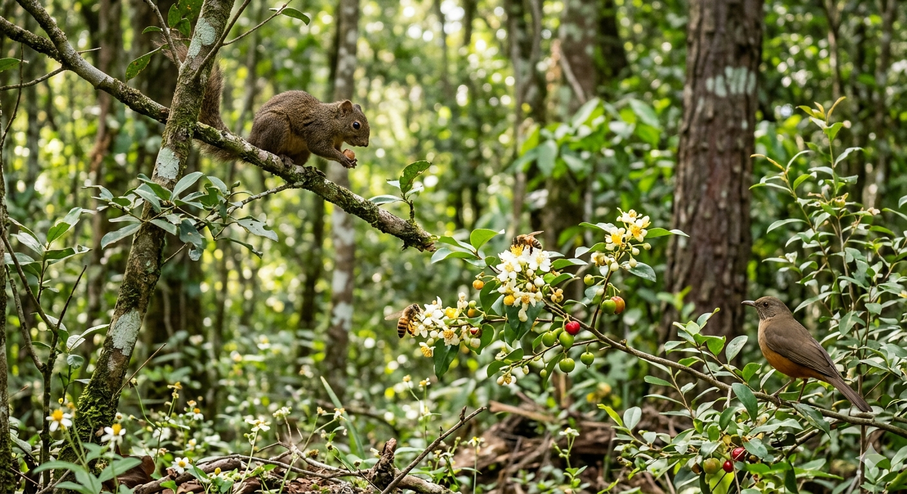
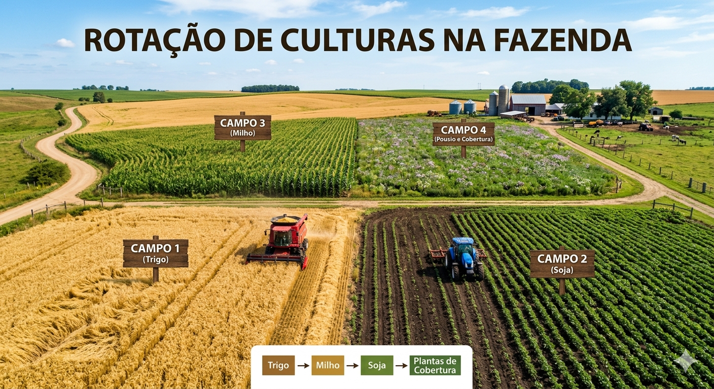

Florestas de pé trazem fartura para o campo
Para plantar alimento e garantir que o prato de todo mundo esteja cheio, não precisamos derrubar as florestas. Pelo contrário! As árvores são as maiores parceiras do agricultor. Elas ajudam a controlar o clima, mantêm a terra firme e ajudam a formar as chuvas que molham as plantações. Quando o Agro mantém as árvores de pé, ele garante que a própria colheita continue forte no futuro. Natureza protegida significa colheita garantida!

As abelhas e a plantação
Além de ajudar com o clima, essas matas e florestas que ficam em volta das plantações servem de casa para as abelhas. Quando deixamos as árvores de pé, as abelhas saem da floresta e vão até a plantação para visitar as flores. Nesse processo, elas fazem a polinização, que é o transporte do pólen que faz nascer os frutos e as sementes. Sem as abelhas que moram na floresta, muitas das frutas e legumes que nós comemos todos os dias simplesmente não existiriam. Elas trabalham de graça ajudando o agricultor a ter alimentos mais bonitos e saudáveis.

Você sabia que os rios têm "cílios"?
Chamamos de Mata Ciliar a floresta que fica bem na beira dos rios e lagos. Do mesmo jeito que os nossos cílios protegem os nossos olhos contra a poeira, essas árvores protegem a água. Sem elas por perto, a terra das margens desaba, a água fica suja e o rio pode até secar. Manter a mata ciliar viva é proteger a água que mata a nossa sede e que ajuda a cuidar do campo.

Tecnologia contra o desperdício
A água, aliás, é o nosso bem mais precioso. Antigamente, gastava-se muita água molhando a plantação inteira de uma vez, sem controle. Hoje, com a irrigação automática inteligente, tudo mudou! Pequenos sensores colocados na terra medem se o solo está seco ou úmido. Se a terra já estiver molhada, o sistema não liga. Assim, a planta recebe apenas a quantidade exata de água que precisa para crescer e nós evitamos totalmente o desperdício.

Deixe o solo descansar!
Além de cuidar da água, precisamos cuidar do solo. Se uma pessoa comer exatamente a mesma comida todos os dias, vai acabar ficando sem energia e fraca. A terra funciona da mesma forma. Se o agricultor plantar sempre a mesma coisa no mesmo lugar, o solo fica cansado e sem forças. A solução para isso é a rotação de culturas: um verdadeiro revezamento! Em uma época planta-se milho, na outra, soja ou feijão. Cada planta devolve para a terra um nutriente diferente. Assim, o solo continua sempre forte, saudável e cheio de vitaminas naturais, sem precisar de produtos químicos pesados.

Produzir alimentos de forma inteligente, usando a tecnologia em perfeito equilíbrio com o meio ambiente, é o único caminho para garantir um futuro sustentável para todos nós.